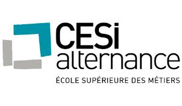
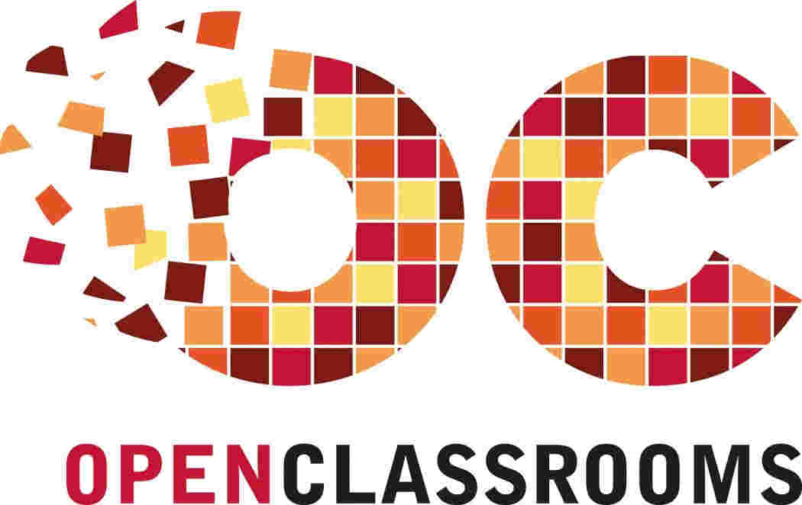
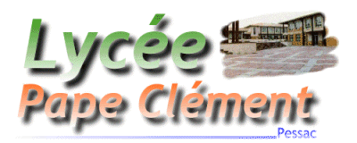
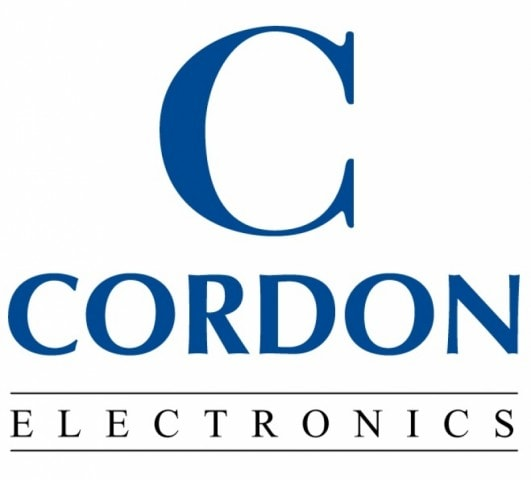

CÉDRIC AVRIL
DÉVELOPPEUR INTÉGRATEUR WEB

CONTACT
- 22 avenue de chiquet, appt. 56
- 33 600 Pessac
- +33 (0) 660 999 649
LIENS
- contact@naytheet.fr

- http://naytheet.fr
- https://www.linkedin.com/in/cedricavril/

CESI
2017

Développeur Intégrateur Web / Mobile
Définir le besoin des clients et rédiger un cahier des charges avec charte graphique en équipe. Adapter un site web pour tout appareil ou écran. Présenter des projets. Répartir des tâches et les planifier. Utiliser des outils de gestion de projets. Faire de la veille technologique dans tous les langages et les méthodes de référencement. Rédiger des articles pertinents. Utiliser des frameworks. Faire des pages d'administration et former les clients.
Certificat OpenClassrooms
2014

Concevez votre site web avec PHP et MySQL
Acquérir des méthodes de codage. Maîtriser les outils préconisés. Adapter mes acquis en C++ et algorithmique à ces langages principaux. Respecter conventions, normes et principes de sécurité. Pratiquer et fournir des prestations à des clients potentiels.
AFPA
2012
Technicien d'Assistance en Informatique
Adapter mon niveau de langage pour l'interlocuteur. Créer des tickets d'intervention. Maintenir une base de connaissance. Utiliser des applications d'intervention à distance. Configurer le serveur d'un parc informatique. Installer un ou plusieurs système d'exploitation sur un PC. Diagnostiquer et Dépanner le matériel d'un PC fixe ou portable. Faire des sauvegardes de données ou système. Habilitation éléctrique acquise.
AFPA
2007
câbleur aéronautique
Gainer ensemble plusieurs câbles blindés et les placer dans des armatures d'avions civils. Utiliser des outils spécifiques de dénudage et de soudage. Connaître la nomenclature des câbles. Tresser, sertir, et connaître des méthodes de nouage.
AFPA
2004 - 2005
Niveau de Technicien supérieur en automatisme et informatique industrielle
Câbler et programmer des automates pour infrastructures ou systèmes de circulation. Identifier les entrées / sorties relayées vers des moteurs. Utiliser des logiciels de supervision et de modelisation de déclenchement.
Université Michel de
Montaigne
1998/2001
Niveau Deug LEA Anglais/Espagnol
Approfondir anglais et espagnol, à l'écrit et à l'oral. Etudier civilisations espagnoles et anglais des affaires. Savoir résumer un texte en anglais avec une faible tolérance de nombre de mots. Commenter des textes dans les deux langues. Traduire un texte dans un anglais ou un espagnol courant. Acquérir et distinguer les termes américains et anglais.
IUT
1997 - 1998
Génie électrique et informatique industrielle
Étudier des mathématiques orientées électronique et électricité. Réaliser en binôme des circuits intégrés selon des études et schémas à dessiner. Tester, observer et commenter des circuits et composants électroniques en utilisant oscilloscopes et multimètres. Utiliser la documentation.
IUT
1995 - 1997
Génie informatique
Étudier des mathématiques orientées logique, apprendre à faire des théorèmes logiques. Résoudre et factoriser des formules logiques. Concevoir des algorithmes pointus et Étudier en détail leur fonctionnement avec rigueur. Apprendre et approfondir les rudiments de la programmation. Maîtriser les langages essentiels. Analyser et structurer des données. Mener à bien des projets. Étudier l'anglais technique et courant.
Lycée Pape Clément
1995

Bac S(ti)
Pratique de la programmation et réalisation de ma première application de bureau, qui aura été confirmée avec Universoft.
Auto-entrepreneur
2012-2014
Programmation informatique et dépannage
Dépannage système et matériel pour laptop et PC, conseil et assistanat clientèle
* Créations de sites web :
Computerbix → Maintenance du site
Visioserenity Pro → Intégration de flash et de scripts de visite de propriétés via google map
Gujan Salsa Festival (2 sites) → Codage d’un thème sous Wordpress en suivant une maquette
Es-tu hypocondriaque ? → Développement d’un projet d’étudiante en graphisme, avec enregistrement de données et affichage de statistiques
Le chai des vins → Construction d’un site élégant rendue simple grâce à des scripts jquery
Hôtel Les Pins → Elaboration d’un backoffice permettant tarification et rédaction de news, intégration d’un agenda, Mise en place d’un système d’enregistrement d’empreinte de carte bleue pour réserver une chambre
Computer Mobile Services → Premier site responsive calqué sur une maquette tierce fourni par le client
* Maintenance de sites web :
Jardin et écotourisme → Factorisation et reprise du code d’une association pour le rendre dynamique avec un hébergement limité en taille et des archives stockées en base de données
William Théviot → Ajout d’une page d’administration contenant un script de traitement de texte convertissant les données saisies en html
* Créations d’applications :
Universoft → Programmation d’une médiathèque inspirée par myvideosoft avec capture de données (textes et images) transparente sur le web et protection de logiciel
Winamp Podcast Pack → Développement d’un programme de génération de code et d’automatisation d’upload pour émission de radio lue sur winamp, pour publier son podcast une fois enregistrée. Conception des icônes et du logo avec inkscape. Réalisation du mode d’emploi et publication sur youtube en anglais et en français. Empaquetage en programme exécutable auto extractible.
Cordon Electronics
2008-2009

Opérateur d'atelier
Contrôle qualité de mobiles Nokia et HTC via des bancs d'essai. Réparation de Niveau 1. Proposition de page intranet de comptage de poste à cordon electronics jugée intéressante mais déjà incluse dans un projet. Le projet mettant du temps à se réaliser, j’ai quand même utilisé ce compteur pendant un certain temps.